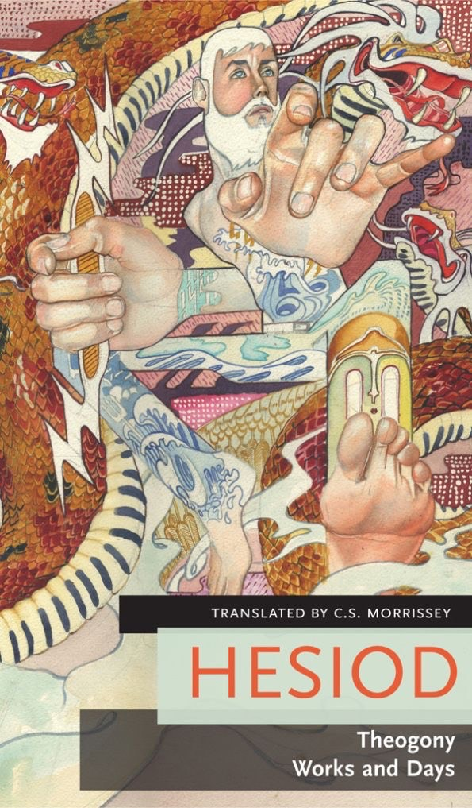

Назива се још и класична књижевност и при томе се мисли на Античку Грчу и Антички Рим. У ову књижевност се урачунава књижевност од развитка првог писма и књижевности у Месопотамији, Египту, Персији, Индији, Палестини па све до почетка средњовековне књижевности.
Под класичном књижевношћу се мисли на дела која су писана на неком од класичних језика:
Античка књижевност је веома разуђена географски па су због тога неки жанрови, метричке или стилске форме често карактеристичне само за поједине области. Када говоримо о грчкој традицији, која је веома дуга, можемо говорити о њеној подели на три периода.
Еп је опширно приповедање у стиху о значајним догађајима са много појединости. Он може захватити целокупан живот неког народа нарочито у приказу догађаја који су за њега судбински важни као што су ратови, утемељење државе, путовања и открића опште важности, судбине изузетно важних људи. Неки од најзначајнијих су:
Трагедија је врста драме у којој главни лик или идеје за које се он бори, нестају или пропадају - исход је трагичан. Сама реч долази од грчких речи јарац и песма. Није у потпуности јасно зашто је тај облик драме прозван „јарчевом песмом“. Могуће је да су први извођачи били огрнути јарчевом кожом или пак јарца добијали као награду или плату за своју приредбу. Можда је назив повезан са жртвом која се приносила у време фестивала трагедије и „трагичним“ звуком који је јарац производио приликом жртвовања.
Према грчком филозофу Аристотелу, темељна улога трагедије је катарза, односно осећај сажаљења којег трагедија мора изазвати код гледаоца.
Најпознатији антички грчки писци трагдије и њихова дела су: